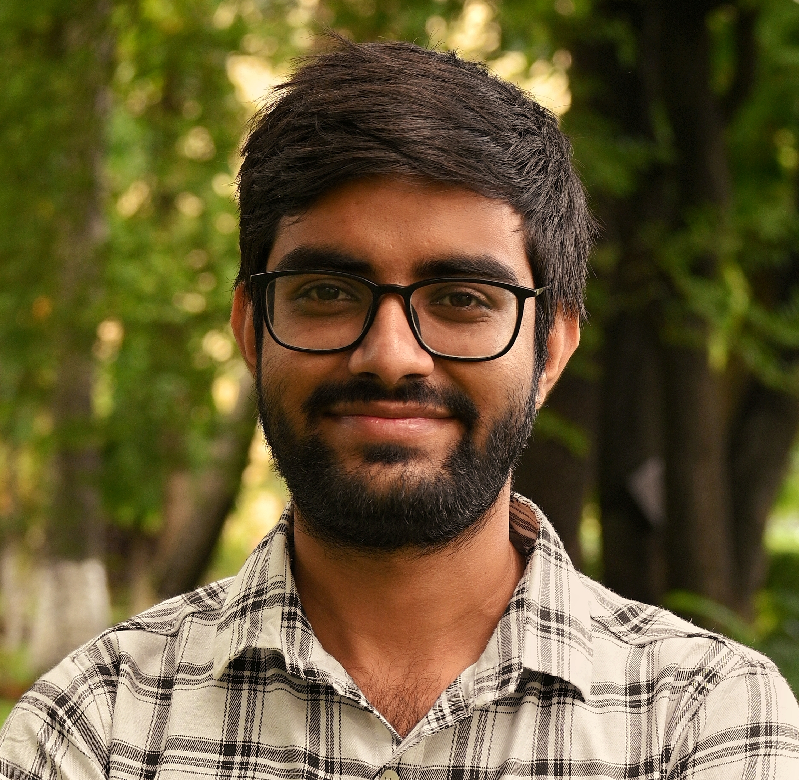

01 / PATHWAYS
Event Tracking
A systematic analysis of rearrangements of spatial clusters across multiple length and time scales, used to reveal pathway complexity in hydrophobic peptide assembly.
Ph.D. researcher in computational chemistry at the Indian Association for the Cultivation of Science, studying molecular self-assembly through atomistic simulations, statistical mechanics, enhanced sampling and data-driven analysis.

My research combines molecular simulation, statistical mechanics and computational analysis to understand the kinetics, thermodynamics and mechanisms of molecular self-assembly.
I am a Computational Chemistry Ph.D. researcher at the School of Chemical Sciences, Indian Association for the Cultivation of Science, Kolkata. My doctoral research focuses on the kinetic mechanism and free-energy landscape of molecular self-assembly.
I develop simulation and analysis workflows for complex molecular systems, including enhanced sampling, free-energy calculations, cluster-based pathway analysis and multidimensional interaction-space analysis.
A major focus of my work is connecting microscopic molecular interactions and conformational properties with emergent assembly behavior at larger length and time scales.
My recent work develops complementary ways of looking at self-assembly: pathway events, time-dependent interaction patterns, and free-energy landscapes of single molecules and molecular pairs.
A systematic analysis of rearrangements of spatial clusters across multiple length and time scales, used to reveal pathway complexity in hydrophobic peptide assembly.
Temporal Analysis of Multidimensional Chemical Interaction Space, describing assembly mechanisms through combinations of chemically meaningful intermolecular interactions.
Free-energy calculations of single-peptide conformations and bi-molecular associations to connect molecular properties with nanoscale assembly behavior.
Umbrella sampling, temperature-accelerated molecular dynamics and metadynamics-based workflows for exploring complex and high-barrier molecular states.
Atomistic analysis of the role of on-pathway interfacial water dynamics in peptide self-assembly and nanofibre formation.
Development of simulation methods containing atomistic and coarse-grained molecules.
Computational study of conformational transition in protein using generative AI models.
Python- and OpenMM-based workflows for molecular dynamics, structural analysis, free-energy calculations and large-scale trajectory analysis on HPC environments.
Four recent peer-reviewed publications covering pathway analysis, solvent dynamics, interaction-space analysis and free-energy-based interpretation of peptide self-assembly.
School of Chemical Sciences, Indian Association for the Cultivation of Science, Kolkata.
Research on peptide self-assembly, kinetics, enhanced sampling, event tracking, interaction-space analysis and large-scale trajectory analysis.
Indian Association for the Cultivation of Science, Kolkata.
Thesis: Kinetic Mechanism and Free Energy Landscape of Molecular Self-assembly.
Indian Association for the Cultivation of Science, Kolkata.
St. Xavier’s College, University of Calcutta, Kolkata.
Interdisciplinary Symposium on Materials Chemistry, Bhabha Atomic Research Centre, Mumbai.
MD@60, Jawaharlal Nehru Centre for Advanced Scientific Research, Bangalore.
Department of Science and Technology, Government of India.
For research collaborations, scientific discussions, computational chemistry opportunities or questions about my work, feel free to get in touch.